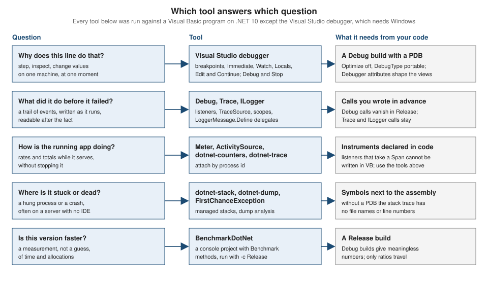

Debugging and Diagnostics
|
This content was generated with the assistance of AI and should be verified against the official documentation before being relied on in production. |
This page is written against Visual Basic 17.13 on .NET 10 (SDK 10.0.402) and was checked on 2026-10-19. The examples that start with
Option Strict On are complete programs that were built with warnings treated as errors (except where the text says otherwise) and run
in the .NET 10 SDK container (Linux, arm64); the output shown is real output. Every console example has the root namespace
ShelfDocs, because exception messages, stack traces and logger categories include it. Everything that needs the Visual Studio
debugger (breakpoints, the Immediate window, Edit and Continue) needs Windows and was not run here: those sections say what the
Microsoft documentation states and are labelled "not run". Tools that run from the command line (dotnet watch, dotnet-counters,
dotnet-trace, dotnet-stack, dotnet-dump, BenchmarkDotNet) were run against Visual Basic programs in the same container, and the
results include two places where Visual Basic differs from C#.
Debugging has two halves. The first is the interactive half, where you stop a program and look at it: a debugger, with the
breakpoints, windows and edit commands of Visual Studio. The second is the evidence half, where the program or a tool outside it
records what happens so that you can read it later or on another machine: Debug and Trace, logging, counters, traces, dumps and
benchmarks. Visual Basic uses the same .NET diagnostics stack as C#, because the compiler produces ordinary IL with ordinary debug
information. The differences are few but they matter, and this page names each one where it occurs. The projects and the build
properties are on Projects, MSBuild and the dotnet CLI;
exception syntax is on Structured Exception Handling; test
projects, which are the best debugging tool for logic errors, are on Testing.

Debug and Release builds
Every debugging technique depends on what the compiler emitted. The SDK has two standard configurations, Debug and Release, and the
differences that matter for debugging are these (the values come from dotnet msbuild -getProperty on the sample project):
| Property | Debug | Release | Meaning |
|---|---|---|---|
|
|
|
Release lets the compiler and the JIT inline, reorder and remove code. A debugger sees fewer locals, and the "current line" jumps. |
|
|
|
The kind of symbol file. Portable PDBs work on every platform and the SDK writes one next to the assembly in both configurations. |
|
|
|
The classic switch for |
|
|
(empty) |
Defines the conditional-compilation constant |
|
|
|
Defines |
|
|
|
The same sources always produce the same bytes, which is what Source Link and symbol servers need. |
|
|
|
|
The stack trace is the first diagnostic you meet. A Release build with the PDB beside it still prints file names and line numbers, because
the PDB is what turns an IL offset into a source line. Remove the PDB and the frames keep their method names but lose their locations.
The program below throws an exception that nobody handles; the same build is run twice, the second time with DebugType set to none:
Option Strict On
Module UnhandledDemo
Public Sub Run()
AddHandler AppDomain.CurrentDomain.UnhandledException,
Sub(sender As Object, e As UnhandledExceptionEventArgs)
Console.WriteLine("UnhandledException: " & CType(e.ExceptionObject, Exception).Message & ", terminating=" & e.IsTerminating.ToString())
End Sub
Throw New InvalidOperationException("nobody caught this")
End Sub
End ModuleUnhandledException: nobody caught this, terminating=True
Unhandled exception. System.InvalidOperationException: nobody caught this
at ShelfDocs.UnhandledDemo.Run() in /w/UnhandledDemo.vb:line 9
at ShelfDocs.Program.Main(String[] args) in /w/Program.vb:line 14With dotnet build -c Release -p:DebugType=none the output file list has no Core.pdb and the same program prints:
UnhandledException: nobody caught this, terminating=True
Unhandled exception. System.InvalidOperationException: nobody caught this
at ShelfDocs.UnhandledDemo.Run()
at ShelfDocs.Program.Main(String[] args)Both runs end with exit code 134 (the process aborts after printing the exception on Linux; on Windows the code is different). Three
facts follow. The AppDomain.UnhandledException handler runs before the runtime prints the message, and it cannot stop the process
(IsTerminating is True); it is the place to flush a log. Keep the PDB with every build you ship, or publish it to a symbol server,
because a production stack trace without line numbers costs hours. And EmbedAllSources, PathMap and Source Link let a debugger find
the right source for a deployed assembly; they are described for libraries on
Libraries, Packaging and Deployment.
Source: Source Link, AppDomain.UnhandledException
The programs on this page share one console project and a dispatcher, so that one build produces every example. The project file is the usual one, with the SDK defaults overridden by the properties that the rest of the site recommends:
<Project Sdk="Microsoft.NET.Sdk">
<PropertyGroup>
<OutputType>Exe</OutputType>
<TargetFramework>net10.0</TargetFramework>
<RootNamespace>ShelfDocs</RootNamespace>
<OptionStrict>On</OptionStrict>
<TreatWarningsAsErrors>true</TreatWarningsAsErrors>
<NuGetAudit>false</NuGetAudit>
</PropertyGroup>
</Project>and the dispatcher selects the demo by the first command-line argument:
Option Strict On
Module Program
Sub Main(args As String())
Dim which As String = If(args.Length > 0, args(0), "")
Select Case which
Case "trace" : TraceDemo.Run()
Case "assert" : AssertDemo.Run()
Case "assertdefault" : DefaultAssertDemo.Run()
Case "cond" : ConditionalDemo.Run()
Case "stop" : StopDemo.Run()
Case "attrs" : AttrDemo.Run()
Case "first" : FirstChanceDemo.Run()
Case "unhandled" : UnhandledDemo.Run()
Case "metrics" : MetricsDemo.Run()
Case Else : Console.WriteLine("unknown example")
End Select
End Sub
End ModuleThe Visual Studio debugger for Visual Basic (not run)
Visual Studio 2026 is the complete debugger for Visual Basic. The Microsoft documentation describes the debugger as language neutral, with a few places where Visual Basic is named explicitly. What follows is a checklist drawn from those pages, not output of this page’s container.
Breakpoints, stepping and the windows
-
Breakpoints. A breakpoint can carry a conditional expression, a hit count or a filter, and it can log a message instead of stopping (a "tracepoint"). A condition is an expression, so write it with the Visual Basic operators (
AndAlso,Is Nothing,=for equality). A condition is evaluated on every pass and slows a hot loop; a hit count is cheaper. -
Stepping. Step Into, Step Over, Step Out and Run to Cursor behave as in any .NET language. Code that carries the debugger attributes described below is stepped over when Just My Code is on.
-
Locals, Autos and Watch. Watch accepts any expression the expression evaluator understands. The Microsoft page on debugger expressions lists what Visual Basic cannot evaluate: for dynamic objects, the compound operators
+=,-=,%=,/=and*=, many casts, method calls with more than two arguments, property setters with arguments, assignment to an indexer, and the short-circuit operators on dynamic operands. -
The Immediate window. It evaluates a Visual Basic expression in the current frame, and while debugging is stopped it can also change state. The documentation’s own examples are
j = 2(prints that the expression was evaluated and has no value) and? j(prints the value), and?MyFunction(2)calls a function of a Visual Basic console project at design time. -
Exception Settings. The debugger can break when an exception is thrown (first chance), not only when it is unhandled. The Microsoft page notes that in a Visual Basic application the debugger treats all errors as exceptions, even when the program uses the legacy unstructured handlers, and that the Exception Settings window supports generic exception types in C# but not in Visual Basic: to break on
MyNamespace.GenericException(Of T)you add the exception by its metadata name, with a backtick and the arity. -
Just My Code. With Just My Code on, the debugger steps over and does not stop in code that is not yours. Code is "not yours" when it has no symbols loaded, or when it carries attributes such as
DebuggerNonUserCode,DebuggerHiddenorDebuggerStepThrough. -
Attach to Process. A running process can be debugged by attaching the debugger to it; Edit and Continue is not available after attaching.
Edit and Continue and Hot Reload
Visual Studio’s Hot Reload, which the Microsoft documentation says was previously called Edit and Continue, lets you change code while the program is stopped at a breakpoint (and, for supported .NET 6+ apps, while it runs without a debugger) and apply the change without restarting. The documentation states that the debugger-attached experience works for both C# and Visual Basic on .NET Framework and on .NET 5 and later, and gives a separate page, "Hot Reload (Visual Basic)", with the limits that matter here:
-
It is not available when you started debugging with Attach to Process, and not for optimized code or mixed managed and native code.
-
The list of unsupported changes is shared with C#, plus Visual Basic-specific ones: you cannot modify a member that uses a legacy unstructured error statement, or one that contains an
Aggregate,Group By, simpleJoinorGroup Joinquery clause. -
Changing the signature of a method, adding a destructor or changing the current statement or any other active statement (anything on the call stack) requires a restart.
-
If you make a change that is not allowed, Visual Studio underlines it with a purple wavy line and adds a task to the Task List; you cannot continue until you undo the illegal edit.
The command-line Hot Reload is a different story, and it is the one result on this page that contradicts what you might expect. The
dotnet watch command applies Hot Reload for C# (the documentation: "Starting in .NET 6 SDK, dotnet watch includes support for hot
reload"). The program below is a loop that prints the result of a function every half second; a second process edits the function
six seconds into the run, while dotnet watch run --non-interactive is running:
Option Strict On
Imports System.Threading
Module Program
Function Message() As String
Return "version one"
End Function
Sub Main()
For i As Integer = 1 To 12
Console.WriteLine(i.ToString() & ": " & Message())
Thread.Sleep(500)
Next
End Sub
End Moduledotnet watch : Hot reload enabled. For a list of supported edits, see https://aka.ms/dotnet/hot-reload.
dotnet watch : Waiting for changes
1: version one
2: version one
3: version one
4: version one
5: version one
6: version one
7: version one
8: version one
9: version one
dotnet watch : File updated: ./Program.vb
dotnet watch : Restart is needed to apply the changes.
dotnet watch : [Hot (net10.0)] Exited
dotnet watch : Waiting for changes
1: version two
2: version two
3: version twoThe loop restarted from 1 with the new text. With --verbose the reason is printed:
error ENC1009: Changing source file 'Program.vb' in a project 'Hot' that does not support Hot Reload requires restarting the application; Visual Basic does not support Hot Reload.
The same experiment with a C# project (an equivalent top-level program with the same function and the same edit) printed
dotnet watch : C# and Razor changes applied in 320ms. and the loop continued from where it was, now printing version two.
So on SDK 10.0.402 dotnet watch is a rebuild-and-restart loop for Visual Basic, which is still useful (save, and the program
restarts), but it is not Hot Reload; and the claim that Hot Reload "supports Visual Basic" is true of the Visual Studio debugger, as the
Microsoft pages say, and was not true of the dotnet watch host in this test. Do not plan a Visual Basic workflow around
dotnet watch preserving state. (The dotnet watch command exists for Visual Basic projects: only the delta application is missing.)
Source: dotnet watch
Debug and Trace
The System.Diagnostics.Debug and Trace classes write messages and check assumptions. They share one list of listeners, the objects
that receive the text. They differ in one way: every method of Debug is marked <Conditional("DEBUG")> and every method of
Trace <Conditional("TRACE")>, so the compiler removes the call, including the evaluation of its arguments, when the
constant is not defined. The next program shows the effect on a call with a side effect. Note is a procedure of the program that is
conditional on a constant the project does not define:
Option Strict On
Imports System.Diagnostics
Module ConditionalDemo
Private _calls As Integer
Private Function Expensive() As String
_calls += 1
Return "computed"
End Function
<Conditional("VERBOSE")>
Private Sub Note(message As String)
Console.WriteLine("note: " & message)
End Sub
Public Sub Run()
Debug.WriteLine(Expensive())
Trace.WriteLine(Expensive())
Note(Expensive())
Console.WriteLine("Expensive() ran " & _calls.ToString() & " time(s)")
End Sub
End ModuleOutput of the Debug build, of the Release build, and of the Release build with -p:DefineConstants=VERBOSE:
== Debug
Expensive() ran 2 time(s)
== Release
Expensive() ran 1 time(s)
== Release with DefineConstants=VERBOSE
note: computed
Expensive() ran 2 time(s)In Debug, Debug.WriteLine and Trace.WriteLine each evaluate their argument (two calls); in Release the Debug call and its argument
disappear and only the Trace call remains (one call). Note is not called at all unless VERBOSE is defined, and when it is, its
argument is evaluated too. In Visual Basic a Conditional attribute is allowed only on a Sub; on a Function the compiler reports
BC41007 (see Conditional Compilation and Directives).
The practical rule: never put work that the program needs inside an argument of a Debug call.
Listeners, indentation and switches
On .NET a new process has one listener, DefaultTraceListener, which writes to an attached debugger and, on Windows, to the debug
output stream; on a console with no debugger attached the messages go nowhere. To see them, add a listener such as
ConsoleTraceListener. The program also shows Indent, conditional writes, a TraceSwitch (a named verbosity level, which can be set
from configuration code) and a TraceSource (a named channel with its own listeners and a minimum level, which is the better choice
for a library):
Option Strict On
Imports System.Diagnostics
Module TraceDemo
Public Sub Run()
Trace.Listeners.Clear()
Trace.Listeners.Add(New ConsoleTraceListener())
Debug.WriteLine("Debug.WriteLine: only in Debug builds")
Trace.WriteLine("Trace.WriteLine: in every build")
Debug.Indent()
Debug.WriteLine("indented once")
Debug.Unindent()
Dim verbose As Boolean = False
Debug.WriteLineIf(verbose, "never written")
Trace.WriteLineIf(Not verbose, "written because the condition is true")
Dim sw As New TraceSwitch("Shelf", "Shelf tracing") With {.Level = TraceLevel.Warning}
Trace.WriteLineIf(sw.TraceInfo, "info message (suppressed)")
Trace.WriteLineIf(sw.TraceWarning, "warning message (shown)")
Dim source As New TraceSource("Shelf.Loans", SourceLevels.Information)
source.Listeners.Clear()
source.Listeners.Add(New ConsoleTraceListener() With {.TraceOutputOptions = TraceOptions.None})
source.TraceEvent(TraceEventType.Information, 10, "loan {0} created", 42)
source.TraceEvent(TraceEventType.Verbose, 11, "this verbose event is filtered out")
source.TraceEvent(TraceEventType.Warning, 12, "loan {0} is overdue", 42)
source.Flush()
#If DEBUG Then
Console.WriteLine("DEBUG is defined")
#Else
Console.WriteLine("DEBUG is not defined")
#End If
#If TRACE Then
Console.WriteLine("TRACE is defined")
#End If
End Sub
End ModuleOutput in a Debug build (dotnet run):
Debug.WriteLine: only in Debug builds
Trace.WriteLine: in every build
indented once
written because the condition is true
warning message (shown)
Shelf.Loans Information: 10 : loan 42 created
Shelf.Loans Warning: 12 : loan 42 is overdue
DEBUG is defined
TRACE is definedOutput of the same program built with -c Release:
Trace.WriteLine: in every build
written because the condition is true
warning message (shown)
Shelf.Loans Information: 10 : loan 42 created
Shelf.Loans Warning: 12 : loan 42 is overdue
DEBUG is not defined
TRACE is definedThe Verbose event was filtered by the SourceLevels.Information level of the source. The TraceSwitch suppressed info message, because its
level was Warning. Debug.Indent shifts only the Debug and Trace output that follows, in steps of IndentSize (four spaces).
Source: Debug class, TraceSource, ConsoleTraceListener
Debug.Assert and what a failed assertion does
Debug.Assert(condition, message) documents an assumption: a bug in your code, not a condition the user can cause. When the condition
is False, the Fail method of the listeners runs. The two programs below show both outcomes. The first replaces the listeners with one
whose Fail throws an exception, which is also how a test project turns assertions into failures; it also shows that Trace.Assert
survives into Release while Debug.Assert does not:
Option Strict On
Imports System.Diagnostics
Public NotInheritable Class ThrowingListener
Inherits TraceListener
Public Overrides Sub Write(message As String)
Console.Write(message)
End Sub
Public Overrides Sub WriteLine(message As String)
Console.WriteLine(message)
End Sub
Public Overrides Sub Fail(message As String, detailMessage As String)
Throw New InvalidOperationException("Assertion failed: " & message)
End Sub
End Class
Module AssertDemo
Public Sub Run()
Trace.Listeners.Clear()
Trace.Listeners.Add(New ThrowingListener())
Dim quantity As Integer = 0
Try
Debug.Assert(quantity > 0, "quantity must be positive")
Console.WriteLine("Debug.Assert passed or was removed")
Catch ex As InvalidOperationException
Console.WriteLine(ex.Message)
End Try
Try
Trace.Assert(quantity > 0, "quantity must be positive")
Console.WriteLine("Trace.Assert passed")
Catch ex As InvalidOperationException
Console.WriteLine(ex.Message)
End Try
End Sub
End Module
Module DefaultAssertDemo
Public Sub Run()
Console.WriteLine("Asserting with the default listener")
Debug.Assert(1 + 1 = 3, "arithmetic is broken")
Console.WriteLine("not reached in a Debug build")
End Sub
End ModuleOutput in a Debug build, then the output of the Release build (the first line differs because the Debug.Assert call was removed):
Assertion failed: quantity must be positive
Assertion failed: quantity must be positiveDebug.Assert passed or was removed
Assertion failed: quantity must be positiveThe last demo in the file (assertdefault) leaves the default listener in place. On .NET with no debugger attached, a failed assertion
does not show a dialog: the default listener writes the message and the stack and terminates the process, with exit code 134:
Asserting with the default listener
Process terminated.
Assertion failed.
arithmetic is broken
at ShelfDocs.DefaultAssertDemo.Run() in /w/AssertDemo.vb:line 46
at ShelfDocs.Program.Main(String[] args) in /w/Program.vb:line 9Books written for .NET Framework describe the older behaviour, a dialog box with Abort, Retry and Ignore buttons; on .NET Core and later
that dialog is gone and a failed assertion in an unattended process is fatal. If your tests exercise code with Debug.Assert, install a
listener like the one above.
The Stop statement and the Debugger class
Stop is the Visual Basic statement that suspends execution as if a breakpoint were set; Debugger.Break() is the .NET method with
the same intent, and Debugger.Launch() asks the operating system to start a debugger. The Learn page for Stop says that when it is
reached outside the IDE "the debugger is invoked", which is the Windows just-in-time debugging mechanism. The program shows what a
process observes on Linux, where there is no such mechanism:
Option Strict On
Imports System.Diagnostics
Module StopDemo
Public Sub Run()
Console.WriteLine("Debugger.IsAttached = " & Debugger.IsAttached.ToString())
Console.WriteLine("before Stop")
Stop
Console.WriteLine("after Stop")
Debugger.Break()
Console.WriteLine("after Debugger.Break")
End Sub
End ModuleDebugger.IsAttached = False
before Stop
after Stop
after Debugger.BreakOn Linux, with no debugger, both calls returned and the program carried on. What happens on Windows without a debugger depends on the
system’s just-in-time debugging configuration, which is why you should not leave Stop or Debugger.Break() in code you ship; guard
them with If Debugger.IsAttached Then when you want a "break if someone is watching" statement. Debugger.Launch() is useful to start debugging a Windows service or a short-lived child process from its first
line.
Source: Stop statement, Debugger.Break, Debugger.Launch
Controlling what the debugger shows
The debugger shows what the objects contain, which is rarely what you want to read. Attributes in System.Diagnostics change the
views, and the compiler for Visual Basic applies them like any other attribute:
| Attribute | Effect in the debugger |
|---|---|
|
The text shown in the value column. Text in braces is evaluated as an expression, so the syntax of the expression is that of the
language being debugged; keep it to member names to stay portable. It takes precedence over an overridden |
|
Hides a field or property from the expanded view (also |
|
Shows an instance of another class in place of the real members when the object is expanded. |
|
Steps over the method as if it were not yours; breakpoints inside are still hit, and the code still appears on stacks. |
|
The debugger does not stop in the method at all (breakpoints inside are ignored). |
|
Marks code as not yours for Just My Code: the debugger steps over it and shows it as external code. Designers and code generators use it. |
The program applies all of them to a small reference-scenario class and reads the metadata back by reflection, which is the only part that can be demonstrated without a debugger:
Option Strict On
Imports System.Diagnostics
Imports System.Reflection
<DebuggerDisplay("{Title} ({Copies} copies)")>
Public Class BookStock
Public Property Title As String = "Dune"
Public Property Copies As Integer = 3
<DebuggerBrowsable(DebuggerBrowsableState.Never)>
Private ReadOnly _cache As New Dictionary(Of String, String)()
<DebuggerStepThrough>
Public Function Total() As Integer
Return Copies * 2
End Function
<DebuggerHidden>
Public Sub Plumbing()
End Sub
End Class
<DebuggerTypeProxy(GetType(LoanProxy))>
Public Class Loan
Public ReadOnly Property Due As Date = New Date(2026, 10, 19)
Friend ReadOnly Property Note As String = "internal detail"
End Class
Public Class LoanProxy
Private ReadOnly _loan As Loan
Public Sub New(loan As Loan)
_loan = loan
End Sub
Public ReadOnly Property DueText As String
Get
Return _loan.Due.ToString("yyyy-MM-dd")
End Get
End Property
End Class
Module AttrDemo
Public Sub Run()
Dim display As DebuggerDisplayAttribute = GetType(BookStock).GetCustomAttribute(Of DebuggerDisplayAttribute)()
Console.WriteLine("DebuggerDisplay: " & display.Value)
Dim cache As FieldInfo = GetType(BookStock).GetField("_cache", BindingFlags.Instance Or BindingFlags.NonPublic)
Console.WriteLine("Browsable state of _cache: " & cache.GetCustomAttribute(Of DebuggerBrowsableAttribute)().State.ToString())
Dim total As MethodInfo = GetType(BookStock).GetMethod("Total")
Console.WriteLine("Total has DebuggerStepThrough: " & (total.GetCustomAttribute(Of DebuggerStepThroughAttribute)() IsNot Nothing).ToString())
Dim plumbing As MethodInfo = GetType(BookStock).GetMethod("Plumbing")
Console.WriteLine("Plumbing has DebuggerHidden: " & (plumbing.GetCustomAttribute(Of DebuggerHiddenAttribute)() IsNot Nothing).ToString())
Dim proxy As DebuggerTypeProxyAttribute = GetType(Loan).GetCustomAttribute(Of DebuggerTypeProxyAttribute)()
Console.WriteLine("Proxy type: " & proxy.ProxyTypeName)
End Sub
End ModuleDebuggerDisplay: {Title} ({Copies} copies)
Browsable state of _cache: Never
Total has DebuggerStepThrough: True
Plumbing has DebuggerHidden: True
Proxy type: ShelfDocs.LoanProxy, Core, Version=1.0.0.0, Culture=neutral, PublicKeyToken=nullThe DebuggerDisplay string is not checked by the compiler; the expression inside the braces is evaluated by the debugger when the
object is shown, and the Microsoft documentation warns that the syntax of method calls and parameters can vary between languages, so
use it with care and prefer member names. Because the compiler does not check the string, a typo shows up only as an error text in the
debugger window. See
Attributes, Caller Info and Reflection for the
attribute syntax.
Diagnosing exceptions: first chance, filters and unhandled
An exception has two lives. The runtime first looks for a handler (the first pass); Catch ... When filters run during that pass,
before the stack unwinds; then the stack unwinds and the Finally blocks run (the second pass). A first-chance exception is the
notification that a Throw happened, before anyone knows whether a handler exists. AppDomain.FirstChanceException raises it for every
exception, including ones that are caught and swallowed, which makes it the right hook for finding exceptions that code hides:
Option Strict On
Imports System.Runtime.ExceptionServices
Module FirstChanceDemo
Private _firstChance As Integer
Private Function LogAndDecline(ex As Exception) As Boolean
Console.WriteLine(" filter sees: " & ex.GetType().Name & " from " & ex.TargetSite.Name)
Return False
End Function
Private Sub Inner()
Throw New FormatException("bad ISBN")
End Sub
Private Sub Outer()
Try
Inner()
Catch ex As FormatException When LogAndDecline(ex)
Console.WriteLine("never reached")
End Try
End Sub
Private Sub Swallowed()
Try
Integer.Parse("x")
Catch ex As FormatException
' swallowed on purpose: still a first-chance exception
End Try
End Sub
Public Sub Run()
AddHandler AppDomain.CurrentDomain.FirstChanceException,
Sub(sender As Object, e As FirstChanceExceptionEventArgs)
_firstChance += 1
Console.WriteLine("first chance #" & _firstChance.ToString() & ": " & e.Exception.GetType().Name)
End Sub
Swallowed()
Swallowed()
Console.WriteLine("swallowed twice, counted " & _firstChance.ToString())
Try
Outer()
Catch ex As FormatException
Console.WriteLine("caught outside: " & ex.Message)
Dim trace As New System.Diagnostics.StackTrace(ex, True)
Console.WriteLine("top frame: " & trace.GetFrame(0).GetMethod().Name & " line " & trace.GetFrame(0).GetFileLineNumber().ToString())
End Try
End Sub
End Modulefirst chance #1: FormatException
first chance #2: FormatException
swallowed twice, counted 2
first chance #3: FormatException
filter sees: FormatException from Inner
caught outside: bad ISBN
top frame: Inner line 14Reading the output: the two swallowed exceptions were counted, so a program that "never fails" may be throwing and catching thousands of
them (each is slow, because stack capture is expensive). The third exception shows the order: first chance #3 appears before the
filter message, and the filter ran with Inner still on the stack (ex.TargetSite.Name is Inner), which is why a
When LogAndDecline(ex) filter is a standard trick for logging an exception at the point of the throw without catching it, and why it
returns False. New System.Diagnostics.StackTrace(ex, True) read the line number from the PDB. Keep a
FirstChanceException handler short and make sure it cannot throw: it runs on the thread that is throwing, for every exception in the
process.
The hook for the opposite case, an exception that nobody handles, is AppDomain.UnhandledException, shown in the first program of this
page. For crashes in production the evidence you need is a dump, written by the runtime when the process fails. The documentation
describes the environment variables (DOTNET_DbgEnableMiniDump, DOTNET_DbgMiniDumpType, DOTNET_DbgMiniDumpName), and the dump
can then be analyzed with dotnet-dump (see below). Structured exception syntax, filters and Finally are on
Structured Exception Handling; the legacy
unstructured handlers are on Unstructured Error Handling and On Error.
Logging with ILogger
Debug and Trace are fine for development, but a service needs structured logging with levels, categories and scopes, and .NET
has one abstraction for it, Microsoft.Extensions.Logging. It is a NuGet package (the example uses
Microsoft.Extensions.Logging.Console 10.0.0), works from Visual Basic exactly as from C#, and the providers (console, debug, event
log, OpenTelemetry, Serilog and others) plug in behind ILogger. Two Visual Basic points: the source-generated LoggerMessage attribute is documented on partial methods and was not tested
from Visual Basic here, so the example uses the delegate form LoggerMessage.Define, which is the high-performance form anyway; and
Imports Microsoft.Extensions.Logging makes the name Console refer to the namespace Microsoft.Extensions.Logging.Console in a
project that references it, so write System.Console when you print.
Option Strict On
Imports Microsoft.Extensions.Logging
Public Class LoanService
Private Shared ReadOnly LoanCreated As Action(Of ILogger, String, String, Exception) =
LoggerMessage.Define(Of String, String)(LogLevel.Information, New EventId(1001, "LoanCreated"),
"Loan created for {Member} of {Isbn}")
Private Shared ReadOnly LoanFailed As Action(Of ILogger, String, Exception) =
LoggerMessage.Define(Of String)(LogLevel.Error, New EventId(1002, "LoanFailed"), "Could not lend {Isbn}")
Private ReadOnly _logger As ILogger(Of LoanService)
Public Sub New(logger As ILogger(Of LoanService))
_logger = logger
End Sub
Public Sub Lend(member As String, isbn As String)
Using _logger.BeginScope("request {RequestId}", "r-7")
_logger.LogDebug("Checking availability of {Isbn}", isbn)
If isbn.EndsWith("0", StringComparison.Ordinal) Then
Try
Throw New InvalidOperationException("no copies left")
Catch ex As InvalidOperationException
LoanFailed(_logger, isbn, ex)
End Try
Else
LoanCreated(_logger, member, isbn, Nothing)
End If
End Using
End Sub
End Class
Module Program
Sub Main()
Using factory As ILoggerFactory = LoggerFactory.Create(
Sub(builder As ILoggingBuilder)
builder.SetMinimumLevel(LogLevel.Debug)
builder.AddSimpleConsole(Sub(o) o.IncludeScopes = True)
End Sub)
Dim service As New LoanService(factory.CreateLogger(Of LoanService)())
service.Lend("ada", "9780441013593")
service.Lend("ada", "9780441172710")
End Using
End Sub
End Moduledbug: ShelfDocs.LoanService[0]
=> request r-7
Checking availability of 9780441013593
info: ShelfDocs.LoanService[1001]
=> request r-7
Loan created for ada of 9780441013593
dbug: ShelfDocs.LoanService[0]
=> request r-7
Checking availability of 9780441172710
fail: ShelfDocs.LoanService[1002]
=> request r-7
Could not lend 9780441172710
System.InvalidOperationException: no copies left
at ShelfDocs.LoanService.Lend(String member, String isbn) in /w/Program.vb:line 24Each entry has a level (dbug, info, fail), a category (the type name, taken from ILogger(Of LoanService)), an event id in
brackets, the active scope (=> request r-7) and the message, and an exception is printed after it. The placeholders {Member} and
{Isbn} are named so that structured providers can store them as fields; the arguments are positional. The project file used
TreatWarningsAsErrors and NuGetAudit false (the scratch project reads from nuget.org), and the build finished with 0 warnings. Never
build the message with & before passing it (the template is parsed once and cached, and a built string defeats both
structure and caching), and never log secrets: the message and stack of an exception are written in full.
Counters, metrics and activities
A running service is observed by numbers (how many requests per second, how much memory) and by traces (which call produced
this slow request). .NET’s current APIs for both are System.Diagnostics.Metrics (a Meter with counters and histograms) and
System.Diagnostics.Activity (an ActivitySource). They are in the base library, so a Visual Basic program needs no package. The
program below creates both and reads them back inside the process, which is what a test does. Note the way the metrics are read:
the usual MeterListener callback takes a ReadOnlySpan(Of KeyValuePair(Of String, Object)), and Visual Basic cannot write it.
Option Strict On
Imports System.Diagnostics.Metrics
Module Program
Sub Main()
Dim meter As New Meter("ShelfDocs.Loans")
Dim created As Counter(Of Integer) = meter.CreateCounter(Of Integer)("shelf.loans.created")
Using listener As New MeterListener()
listener.InstrumentPublished =
Sub(instrument As Instrument, l As MeterListener)
l.EnableMeasurementEvents(instrument)
End Sub
listener.SetMeasurementEventCallback(Of Integer)(
Sub(instrument As Instrument, value As Integer, tags As ReadOnlySpan(Of KeyValuePair(Of String, Object)), state As Object)
Console.WriteLine(instrument.Name & " += " & value.ToString())
End Sub)
listener.Start()
created.Add(1)
End Using
End Sub
End ModuleProgram.vb(16,73): error BC30668: 'ReadOnlySpan(Of KeyValuePair(Of String, Object))' is obsolete: 'Types with embedded references are not supported in this version of your compiler.'.The compiler treats every Span(Of T) and ReadOnlySpan(Of T) as unusable (BC30668); the same limit is described on
Structures and Value Types and
Interop with C# and Other .NET Languages. Instruments can still be
created and recorded from Visual Basic; what is closed is the in-process callback. Two ways round it: put the MeterListener in a
small C# library, or read the metric through the EventListener that the runtime already exposes for System.Diagnostics.Metrics, as
the next program does. It also shows an ActivityListener, whose callbacks use no spans:
Option Strict On
Imports System.Diagnostics
Imports System.Diagnostics.Metrics
Imports System.Diagnostics.Tracing
Imports System.Threading
Public NotInheritable Class MetricsPrinter
Inherits EventListener
Protected Overrides Sub OnEventSourceCreated(eventSource As EventSource)
If eventSource.Name = "System.Diagnostics.Metrics" Then
Dim args As New Dictionary(Of String, String)() From {
{"SessionId", "shelf-session"},
{"Metrics", "ShelfDocs.Loans"},
{"RefreshInterval", "1"}
}
EnableEvents(eventSource, EventLevel.Informational, EventKeywords.All, args)
End If
End Sub
Protected Overrides Sub OnEventWritten(eventData As EventWrittenEventArgs)
If eventData.EventName = "CounterRateValuePublished" Then
Dim names As IList(Of String) = eventData.PayloadNames
Dim values As IList(Of Object) = eventData.Payload
Console.WriteLine(Convert.ToString(values(names.IndexOf("instrumentName"))) &
": rate=" & Convert.ToString(values(names.IndexOf("rate"))) &
" value=" & Convert.ToString(values(names.IndexOf("value"))))
End If
End Sub
End Class
Module MetricsDemo
Public Sub Run()
Dim meter As New Meter("ShelfDocs.Loans")
Dim created As Counter(Of Integer) = meter.CreateCounter(Of Integer)("shelf.loans.created", "loans", "Loans created")
Using printer As New MetricsPrinter()
created.Add(1)
created.Add(2)
Thread.Sleep(2500)
End Using
Dim source As New ActivitySource("ShelfDocs.Loans")
Using al As New ActivityListener()
al.ShouldListenTo = Function(s As ActivitySource) s.Name = "ShelfDocs.Loans"
al.Sample = Function(ByRef o As ActivityCreationOptions(Of ActivityContext)) ActivitySamplingResult.AllData
al.ActivityStopped = Sub(a As Activity) Console.WriteLine("activity " & a.OperationName & " tag loan=" & CStr(a.GetTagItem("loan")))
ActivitySource.AddActivityListener(al)
Using a As Activity = source.StartActivity("CreateLoan")
a.SetTag("loan", "L-42")
End Using
End Using
End Sub
End Moduleshelf.loans.created: rate=3 value=3
shelf.loans.created: rate=0 value=3
activity CreateLoan tag loan=L-42The EventListener received a report once per RefreshInterval (one second here): the first interval saw a rate of 3 (the two
calls added three loans) and the second a rate of 0, while value stays at the running total. The same event source is what the
command-line tools read, as the next section shows.
The command-line diagnostic tools
The dotnet-counters, dotnet-trace, dotnet-stack and dotnet-dump tools attach to a running process by id through the runtime’s
diagnostic port, with no change to the program, and they work on a Visual Basic application because the data comes from the runtime.
They are .NET tools (dotnet tool install --tool-path /tools dotnet-counters installed version 10.0.750501 of each tool in the test
container) and run on Linux, macOS and Windows. The program that they observed is a Visual Basic console loop that adds to the same
counter ten times a second:
Option Strict On
Imports System.Diagnostics.Metrics
Imports System.Threading
Module Program
Sub Main()
Dim meter As New Meter("ShelfDocs.Loans")
Dim created As Counter(Of Integer) = meter.CreateCounter(Of Integer)("shelf.loans.created", "loans")
Console.WriteLine("pid " & Environment.ProcessId.ToString())
For i As Integer = 1 To 120
created.Add(1)
Thread.Sleep(100)
Next
End Sub
End Moduledotnet-counters collect read the ShelfDocs.Loans meter and two System.Runtime counters for five seconds and wrote a CSV file
(the first rows):
dotnet-counters collect -p $PID --counters ShelfDocs.Loans,System.Runtime[cpu-time,alloc-rate] --format csv -o /tmp/counters --refresh-interval 1 --duration 00:00:05Timestamp,Provider,Counter Name,Counter Type,Mean/Increment
10/19/2026 22:29:07,ShelfDocs.Loans,shelf.loans.created (loans / 1 sec),Rate,9
10/19/2026 22:29:07,System.Runtime,Allocation Rate (B / 1 sec),Rate,343016
10/19/2026 22:29:08,System.Runtime,Allocation Rate (B / 1 sec),Rate,40488
10/19/2026 22:29:08,ShelfDocs.Loans,shelf.loans.created (loans / 1 sec),Rate,10
10/19/2026 22:29:09,ShelfDocs.Loans,shelf.loans.created (loans / 1 sec),Rate,10The rate is ten per second, as the loop’s Thread.Sleep(100) implies. dotnet-counters monitor shows the same numbers live in a
terminal table. dotnet-stack report -p $PID prints the managed stack of every thread, which is the fastest way to see where a hung
process is waiting; the frames carry the Visual Basic names of the module and the method:
Thread (0xC5):
[Native Frames]
System.Private.CoreLib!System.Threading.Thread.Sleep(int32)
Ctr!ShelfDocs.Program.Main()dotnet-trace collect -p $PID --providers Microsoft-Windows-DotNETRuntime:0x1:4 --duration 00:00:03 -o /tmp/t.nettrace wrote a
293 KB .nettrace file, which Visual Studio, PerfView or dotnet-trace convert (to Speedscope) can open. dotnet-dump collect -p $PID
wrote a full dump, and dotnet-dump analyze ran SOS commands against it; clrthreads listed the four threads of the process
(ThreadCount: 4, one of them the finalizer thread). A dump is a snapshot of a whole process, with the memory of every object, so treat
it as sensitive data: it can contain secrets.
Source: dotnet-counters, dotnet-trace, dotnet-stack, dotnet-dump, Dumps
Measuring: Stopwatch, profilers and BenchmarkDotNet
A diagnosis often ends with "this is slow", and the next question is what is slow. Do not guess: measure.
-
Visual Studio’s profiling tools (CPU Usage, .NET Object Allocation, Instrumentation, Database and the Performance Profiler launched with
Alt+F2) work on any .NET assembly with symbols, including one written in Visual Basic. Profile a Release build; a Debug build measures the wrong code. -
dotnet-trace(above) collects the same CPU sampling evidence without Visual Studio. -
Stopwatchis fine for a quick "about how long" in a console program, but one run proves nothing: the first call includes JIT time, and the measurement includes noise. -
BenchmarkDotNet is the library that .NET itself uses: it runs each method many times, discards warm-up, detects the platform, measures allocations and reports the statistics. It generates and builds its own host project for each benchmark, and that works for a Visual Basic benchmark project (BenchmarkDotNet 0.15.8, as run here). The attributes are ordinary Visual Basic attributes:
Option Strict On
Imports System.Text
Imports BenchmarkDotNet.Attributes
Imports BenchmarkDotNet.Running
<MemoryDiagnoser>
<ShortRunJob>
Public Class JoinBenchmarks
Private ReadOnly _titles As String() = Enumerable.Range(1, 100).Select(Function(i) "Title " & i.ToString()).ToArray()
<Benchmark(Baseline:=True)>
Public Function Concatenate() As String
Dim result As String = ""
For Each t As String In _titles
result = result & t & ";"
Next
Return result
End Function
<Benchmark>
Public Function StringBuilderAppend() As String
Dim sb As New StringBuilder()
For Each t As String In _titles
sb.Append(t).Append(";"c)
Next
Return sb.ToString()
End Function
<Benchmark>
Public Function StringJoin() As String
Return String.Join(";", _titles) & ";"
End Function
End Class
Module Program
Sub Main(args As String())
BenchmarkRunner.Run(Of JoinBenchmarks)()
End Sub
End ModuleIt is run as a Release build (dotnet run -c Release; BenchmarkDotNet warns, and gives unreliable numbers, for a Debug build). The
summary block of the real run (the machine is an arm64 Linux container; only the ratios are meaningful, the absolute times are not):
BenchmarkDotNet v0.15.8, Linux Ubuntu 24.04.5 LTS (Noble Numbat) (container)
.NET SDK 10.0.402
[Host] : .NET 10.0.13 (10.0.13, 10.0.1326.50504), Arm64 RyuJIT armv8.0-a
ShortRun : .NET 10.0.13 (10.0.13, 10.0.1326.50504), Arm64 RyuJIT armv8.0-a
Job=ShortRun IterationCount=3 LaunchCount=1
WarmupCount=3
| Method | Mean | Error | StdDev | Ratio | RatioSD | Gen0 | Allocated | Alloc Ratio |
|-------------------- |-----------:|----------:|---------:|------:|--------:|--------:|----------:|------------:|
| Concatenate | 3,749.6 ns | 906.20 ns | 49.67 ns | 1.00 | 0.02 | 21.9154 | 89.52 KB | 1.00 |
| StringBuilderAppend | 388.5 ns | 66.67 ns | 3.65 ns | 0.10 | 0.00 | 1.0424 | 4.26 KB | 0.05 |
| StringJoin | 333.7 ns | 47.94 ns | 2.63 ns | 0.09 | 0.00 | 0.8640 | 3.53 KB | 0.04 |The loop that appends with & allocates 89.52 KB per call against 3.5 to 4.3 KB for the two alternatives, and is about ten times
slower for 100 titles: that is the numerical meaning of the rule "build strings in a loop with StringBuilder or String.Join`". The
`ShortRun job is for demonstration; use the default job for a decision. Benchmarks belong in their own project, not in the test project,
and not in the application. Do not benchmark a Visual Basic program with strict typing switched off: the late-bound calls it permits cost more
than any change you will be comparing (see
Early and Late Binding).
Debugging in VS Code
Visual Studio Code is not a Visual Basic debugging environment, and the Microsoft documentation for .NET in VS Code covers C# and F#
only. VS Code recognizes .vb files with its built-in syntax grammar, which gives colouring but no language server: no IntelliSense, no
rename, no diagnostics inside the editor (the C# Dev Kit extension does not add Visual Basic). The dotnet command line works in the
integrated terminal, so building, running, testing, dotnet watch and the tools on this page work. For the debugger, the C# extension’s
coreclr debug adapter attaches to the runtime, and the runtime does not care what language produced the assembly; a launch
configuration for a built Visual Basic program has the usual shape:
{
"version": "0.2.0",
"configurations": [
{
"name": "Launch VB program",
"type": "coreclr",
"request": "launch",
"preLaunchTask": "build",
"program": "${workspaceFolder}/bin/Debug/net10.0/Core.dll",
"args": [ "first" ],
"cwd": "${workspaceFolder}",
"console": "internalConsole",
"stopAtEntry": false
}
]
}The limits are in the editor, not in the runtime. VS Code decides whether a breakpoint can be placed in a file from the languages for
which a debugger has registered itself, and .vb is not among those of the C# extension; there is a general VS Code setting for
allowing breakpoints in any file (debug.allowBreakpointsEverywhere), and an editor that will not accept the breakpoint is the first
symptom to look for. Neither the breakpoint placement nor the variable views were tested for this page, and Microsoft does not document
the combination, so treat the configuration above as a starting point to verify on your own project. If it does not work, use what
does: Debugger.Launch/Debugger.Break in a Debug build, the Visual Studio debugger on Windows, or the evidence tools of the earlier
sections. A Visual Basic developer who needs a real editor on Linux or macOS is better served by the command line and logging than by
fighting the editor.
Choosing the tool
| Symptom | First tool | Why |
|---|---|---|
A value is wrong at a known line |
Breakpoint, Locals, Immediate window; a unit test that reproduces it |
You need to see the state at that moment. |
An exception is thrown somewhere and swallowed |
Exception Settings (break when thrown), |
The handler hides the throw site. |
The program works in Debug and fails in Release |
Release build with the PDB, |
Optimization changes timing, inlining and the visible locals. |
Slow under load |
|
Find the hot path first, then measure the fix. |
A process is hung or consumes memory |
|
No code change, no restart. |
It fails only on a customer machine |
Structured logs with levels, a crash dump setting, the PDB kept with the release |
You cannot attach a debugger there. |
You want edits without restarting |
Visual Studio Hot Reload (with the debugger); for |
Command-line Hot Reload did not apply Visual Basic edits (ENC1009). |
The consolidated rules, the wrong and the right way of writing each, and the Learn page that states each rule are on
Best Practices and Common Pitfalls. Guidance written for
.NET Framework is outdated in four places: the assertion dialog (gone, see above), Debug and Trace as the only logging (replaced by
ILogger, Meter and the diagnostic tools above), Edit and Continue as the only way to change code in a running program (Hot Reload
exists for Visual Basic only in the Visual Studio debugger), and diagnostics examples that need Windows (the tools
here run on Linux and macOS as well).